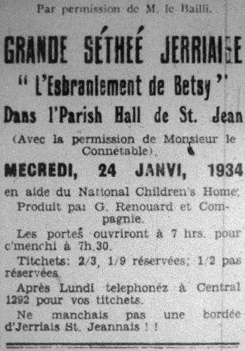

St. Jean,
Le 25e Janvi, 1934
A Moussieu l'Editeu de "l'Evening Post."
Moussieu, - Ch'est avec le pus grand pliaisi et avec ma pus profonde gratitude que je d'mande votre bienveillante co-opération, que l'expérience à dêmontré, qu'on ne r'fuses jamais quand i' s'agit d'une bouanne cause, de m'êpaigni une p'tite carre dans vos colonnes pour me donné l'opportunité de r'mercier bain sincéthement au nom de a Y.L.U. de St. Jean, Maîte George Renouard et sa p'tite compangnie d'artistes de prumié classe, pour la charmante séthée qu'i' nouos donnirent hier au sé dans l'Parish Hall de St. Jean. Nos gens en fûrent enchantés et pâlent dêja d'aver une répétition d'une autre réprésentation du même genre au pus vite.
En conclusion, permetez-mé de donner l'asseuthance à "Maître Pierre Rondé" qu'il à gâgni l'respé et la réconnaissance de touos les St. Jeannais qu'eurent l'avantage d'assister à une séthée des pus agréablyes.
En vos r'merciant, Moussieu,
Je sis votre humblye serviteur,
J. Barette Le Quesne,
Sécrétaire
Viyiz étout: